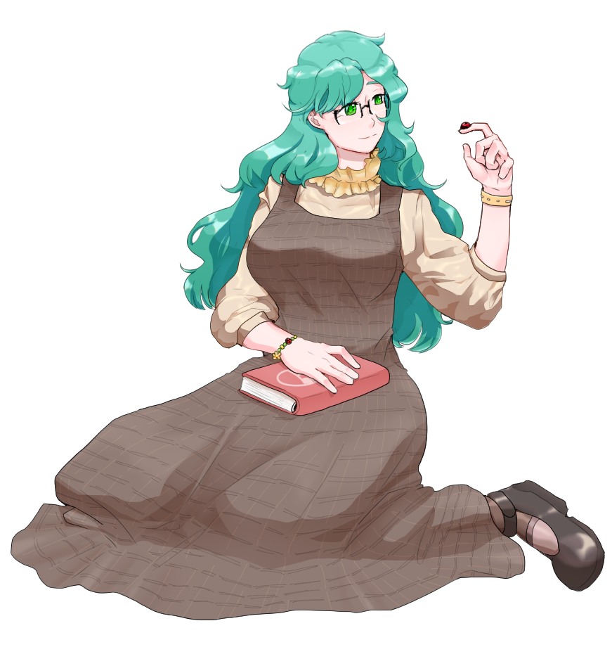

- 
-
이름서 윤성격- 순수하고 밝은 성격. 때로는 너무 순진해서 바보 같아 보일 수도 있다 - 나름 열심히 계획을 짜고 행동하지만 잘 짜지지 않아 행동으로 먼저 나서는 편. 중요한 일은 항상 달력에 적어둔다 - 표현하고 말하는 것을 좋아하는 사람. 그렇게 돌아오는 반응 하나하나에 진심으로 기뻐한다특징- 20대 초반의 나이. 키는 165 남짓 표준체중+2 - 먹는 것을 정말 좋아한다. 다른 사람들 보다 배로 먹는 편 - 국문학과에서 공부하고 있으며, 사람들이 보면 행복해지는 글을 쓰는 것을 꿈으로 두고 있다. 시를 쓰는 것도 굉장히 좋아해서, 선물에는 항상 직접 쓴 시를 동봉한다 - 책 읽는 것과 무당벌레를 좋아한다. 환생이나 전생같은 환상같은 일을 믿는다 - 남들이 모르게 집에서는 SNS 및 서브컬쳐 활동을 열심히 한다. 코스프레를 한창 했던 때가 있다 - 눈에 띄지는 않지만 살집이 있는 편. 그래도 건강하게 운동과 요가를 병행하고 있다 - 지복이라는 남자친구가 있다 - 가장 좋아하는 꽃은 복수초
ⓒ 2020 Site - Com / Illustration - Com